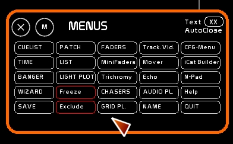
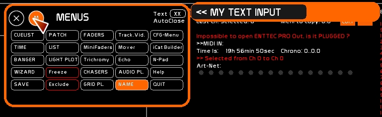
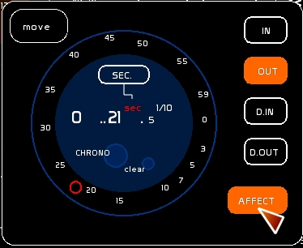

There are 3 types of main commands

These commands are ON/Off commands, waiting to be set to a destination, a container, a target that they act upon. Once you toggle ON the command, you need to click the target that it will affect:
STORE MODIFY and REPORT are the 3 main commands to record a lighting state, a selection of channels, or a link to dynamic content. They enable you to load memories onto a master or assign dynamic content (trichromy, video tracking).
These commands are regularly used in White Cat.
STORE is a recording function.
Click [STORE] or press [F1]
MODIFY enables you to modify certain channels in a dock or in a memory.
Click [MODIFY] or press [F2]
REPORT doesn't work in BLIND.
Click [REPORT] or press [F3]
Click [CLEAR] or press [F4]
Click [NAME] or press [F5]

Click [TIME] or press [F6]

Click [QUIT] or press [CTRL][F12].
The show will be automatically recorded in WhiteCat/Saves/last_save. If you want to quit without saving press [SHIFT][F12]